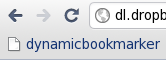
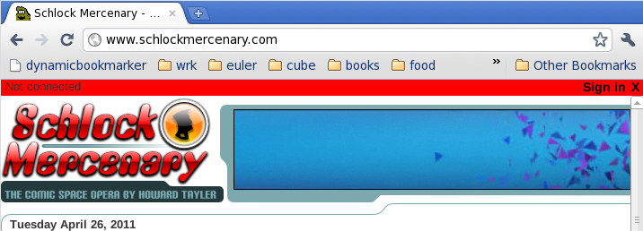
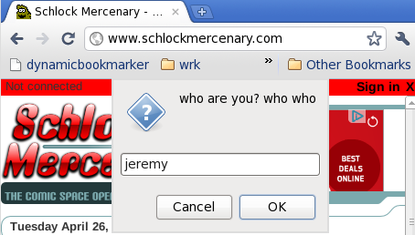
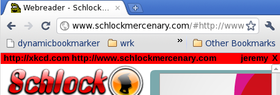
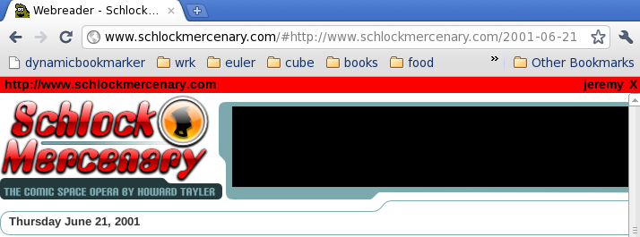
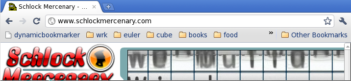

There are lots of ways to stay up to date on blogs and webcomics (Google Reader is a great example of such a program). They all do a great job of keeping you up to date on your favorite web periodicals. However, none of them provide a very good mechanism for starting a new webcomic. If you add xkcd.com to your Google Reader feed, you'll only have access to all future xkcd comics, but none from the past.
My solution to this problem has simply been to pull a marathon catching up to the present and then staying up to date with Google Reader. I don't think I've ever actually managed to do this because I'd keep losing track of where I was in the comic.
Using your favorite browser's bookmarking system partially solves this problem, but you need to remember to update your bookmarks after every single comic you read. What is really needed is a form of "dynamic bookmark" that updates every time you click the "next comic" link.
DynamicBookmarker aims to do just this. It's a bookmarklet, so it should run on any (sufficiently compliant) webbrowser. However, I've only tested it on Google Chrome and Firefox.
To install, simply drag DynamicBookmarker to your bookmark bar. 
Then go to your favorite webcomic and click on the DynamicBookmarker bookmarklet. 
Sign in. Note: There is no signing up, or password protection. For now, this service is entirely trust based. 
Once you're logged in, you should see a list of webcomics you're in the middle of reading. 
As you read the webcomic, note that only the "#" part of the url changes. The title of the website should also be prefixed with "DynamicBookmarker" (the images are a little outdated, they say "Webreader" instead) 
Restart browser, go back to favorite webcomic. 
Click on DynamicBookmarker. Your username was stored in a cookie, so you should automatically be directed to the last comic you read. Enjoy!
iframes, jsonp, and cookies, oh my!
Data are stored here.
Cookies are stored here.
Please contact me at jeremyfleischman@sbcglobal.net with bugs and feature requests.